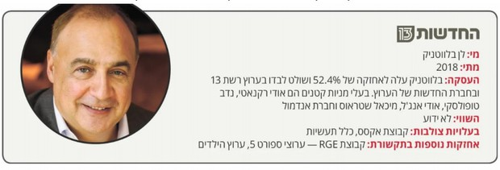
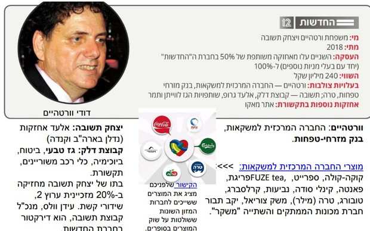
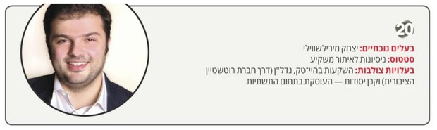
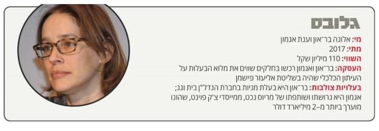
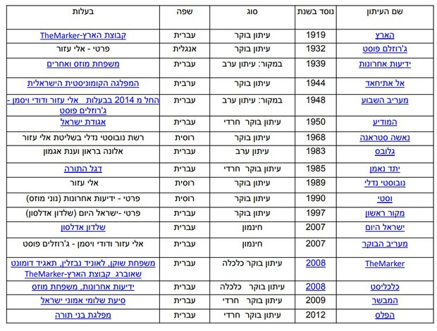
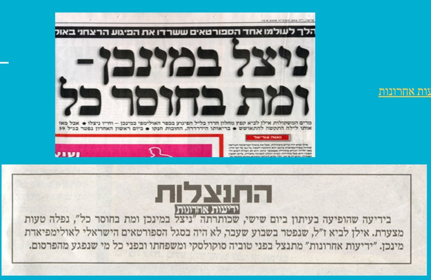
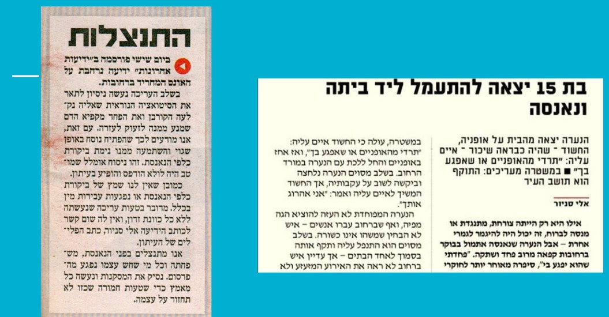

התקשורת כרשות רביעית
המושג "תקשורת כרשות רביעית" מנסה להציג את תפקידה של התקשורת בחברה דמוקרטית. מקובל היה להזכיר שלוש רשויות בחברה: רשות מבצעת (ממשלה), רשות מחוקקת (פרלמנט – הכנסת) ורשות שופטת (מערכת בתי המשפט). הגדרת התקשורת כ"רשות רביעית" מעלה אותה לדרגת חשיבות רבה מאוד, לצד שלוש הרשויות החשובות בחברה המודרנית
כשם שבהגות מדעי המדינה והחברה מקובל המושג של "הפרדת רשויות", כלומר, שצריכה להיות הפרדה מובהקת בין הרשויות כך שלכל אחת מהן תהיה עצמאות ותוכל לפעול מתוך השיקולים שלה ולא כדי לרצות את הרשויות האחרות. לדוגמה, הרשות השופטת צריכה לפעול משיקולים משפטיים ולא משיקולים של הממשלה או הכנסת. הרשות המחוקקת צריכה לחשוב מה לחוקק לטובת הציבור ולא רק לחשוב מה טוב לממשלה. וכך על ידי הפרדה בין הרשויות תוך הקפדה על קשרים ביניהן, אמורה לפעול חברה יציבה ובריאה.
התקשורת כרשות רביעית מציגה אותה כבעלת תפקיד מכריע בחיים הדמוקרטיים. תפקיד התקשורת הוא לקשור בין שלוש הרשויות האחרות ולבקר אותן. התקשורת צריכה לחפש מידע, לעבד אותו, לערוך אותו ולהפיץ אותו לציבור. באופן כזה התקשורת היא זו שמקשרת בין הרשויות שמנהלות את המדינה לבין הציבור שעבורו אמורות לפעול הרשויות הללו.
תפקיד נוסף הוא לבקר כל הזמן את פעולות שאר הרשויות. כלומר, לתקשורת צריכה להיות עמדה "לעומתית" מול שאר הרשויות. היא צריכה להפקיד בינה לבין הממשלה, הכנסת והמשפט וכל הזמן לחקור ולחפש דברים לא ראויים ולחשוף אותם. התקשורת צריכה להציע לציבור אלטרנטיבות לפעולות השלטון ולהראות שיש דרכים נוספות כדי שהציבור יוכל לבחור או להביע עמדתו המושכלת. לכן, אנשי ממסד שטוענים נגד התקשורת, שהיא "תקשורת עוינת" ושהיא "כל הזמן רק רואה את השלילי", אינם מבינים שזה בדיוק תפקיד התקשורת כרשות רביעית, כל הזמן לחפש אלטרנטיבות ולהציע ביקורת על שאר הרשויות.
דה מרקר – את מי משרתת התקשורת בישראל
התמונה המוצגת למעלה היא סוג של מודל אידיאלי, בפועל לתקשורת יש גורמים רבים שמפריעים לה לפעול כרשות רביעית בצורה טובה. למשל מושגים כמו ריכוזיות, בעלות צולבת ועוד.
הישרדותם של כלי התקשורת תלויה לא רק בבעלי הון שממנים אותם, אלא גם בפוליטיקאים. שורה של חוקים ורפורמות שונות שמקדם נתניהו בחודשים האחרונים יצרו תלות חסרת תקדים של כלי התקשורת בהחלטות הדרג הפוליטי.
הפתרון להשפעה של האינטרסים העסקיים אמור היה להיות השידור הציבורי. אבל בישראל, רשות השידור הוכיחה במשך שנים כי היא משמשת כלי שרת בידיהם של פוליטיקאים, שמינו בה מנהלים מטעמם ועשו בה כרצונם.
לקריאת הכתבה ב-TheMarker open_in_new חשיבותה של התקשורת בדמוקרטיה
אמצעי התקשורת, שהם בעלי חשיבות אדירה בכל משטר דמוקרטי, מהווים צלע אחת במשולש העוצמה של מוקדי הכוח בחברה האזרחית, ששתי צלעותיו האחרות הן הדרג הפוליטי והפקידותי, והתאגידים הגדולים ובעלי ההון.
היותם של אמצעי המדיה שבויים במידה רבה בידי הדרג הפוליטי ובידי בעלי ההון ניכרת היטב בישראל, מהקצה העליון של ההירארכיה הניהולית בכלי התקשורת ועד לאחרון העובדים.
בעקבות זאת פוחתת והולכת יכולתם של גופי התקשורת לעמוד בפני לחצים. במערכות רבות, עיתונאים שמנסים ליזום כתבות ותחקירים נגד הגורמים החזקים נבלמים, בדרך כלל בצורה לא מפורשת, ובהמשך מפנימים שיש גורמים שמוטב לא להתעסק אתם, ומטילים על עצמם צנזורה.
בעלות צולבת: חוקי התקשורת השונים בישראל מנסים למנוע את תופעת הבעלויות הצולבות — אחזקה של גורם אחד בכמה גופי תקשורת במקביל — מחשש ליצירת מוקד כוח שיצבור השפעה רבה מדי על השיח הציבורי באופן שירתיע את מקבלי ההחלטות. כך למשל, בעלים של עיתון אינו יכול להיות בעל עניין בערוץ טלוויזיה. חוק הריכוזיות החריף עוד יותר ההוראות, ונועד למנוע מתן רישיון למי שמוגדר גורם ריכוזי.
עולים על מטוס לפגוש טייקון: האנשים שמחליטים מה נראה בחדשות
כחול לבן נופפה בהוצאת משרד התקשורת מידי נתניהו כאחד מהישגיה הפוליטיים - אך לא כולם שמעו על כך. בליכוד טוענים כי שר התקשורת יועז הנדל חייב לתאם עמם כל מינוי של שומר סף בתחום. המינויים שעל השולחן: מנכ"ל מועצת הרשות השניה, יו"ר מועצת הכבלים והלוויין וחברי מועצת התאגיד.
לקריאת הכתבה ב-TheMarker open_in_new מתוך דבריה של שרון שפורר (עיתונאית באתר העצמאי "המקום הכי חם בגהנום") בכנס בנושא הון-שלטון-תקשורת
"דרורית ורטהיים, היא אחת מבעלי המניות הגדולים בקשת. היא ובני משפחתה שולטים גם בחברה המרכזית למשקאות – זכיינית קוקה-קולה בישראל – טרה, בנק מזרחי וגופים נוספים.
את המשמעות של אחזקה בחברת חדשות מרכזית כמו חדשות 12 על-ידי תאגיד רב אינטרסים כמו החברה המרכזית הגדירה שפורר כ"שחיתות מובנית": "העיתונאים של הערוץ לא ידווחו שום דבר על העסקים של דרורית ורטהיים, כי היא הבוסית שלהם. והם לא יכתבו על יצחק תשובה, שאחראי לדעתי על חצי משק.
"תגידו שבשביל זה יש כלי תקשורת אחרים – מה הבעיה שלהם לפרסם דברים על דרורית ורטהיים? הבעיה היא שלא יתנו להם אשראי בבנק של דרורית ורטהיים, וזה עוד לפני שמזכירים שמדובר בענקית פרסום מטורפת, שאם היא תעשה חרם פרסומות על עיתון הוא יפסיד הכנסות מאוד משמעותיות".
מי שולט בתקשורת בישראל?
ערוץ 13 - רשת: עסקת המיזוג של רשת וערוץ עשר בינואר 2019 הפכה את לן בלווטניק, אוליגארך יהודי יליד אוקראינה, תושב לונדון, לבעל השליטה (52%) בערוץ הממוזג, ולאיש שעל פיו יישק דבר. במקביל, מנסה בלווטניק להגדיל את השפעתו בישראל. בימים אלה מנהלים אנשיו בישראל מגעים עם קבוצת בזק לרכישת אתר וואלה, שנמצא על המדף. בשנת 2017 נחקר בלווטניק בלונדון בקשר לתיק 1000. לפי עדות בלווטניק, רכישת ערוץ 10 נעשתה לבקשת נתניהו, אשר הועברה באמצעות ארי הרו. על פי החשד, קבלת ההצעה של בלווטניק, אשר הציע מחיר כפול מזה של אילן שילוח, אפשרה העברת סכומי כסף לבעלי המניות וזה היה אחד התגמולים לארנון מילצ'ן שהיה עד אז חלק מהבעלים של ערוץ 10.
חדשות ערוץ 12 – קשת: קשת נמצאת בשליטת משפחת וורטהיים. לאחר המיזוג בין רשת לעשר עלתה קשת לאחזקה של 100% בחדשות 12 ובכך החברה עברה לשליטה בלעדית של דודי ורטהיים, וגם תשובה הגדיל את אחזקותיו בחברה.
ערוץ 20 וערוצי רדיו חרדיים – רדיו קול חי: בעל הון נוסף שהגדיל את כוחו הוא יצחק מירילשווילי, בנו של האוליגרך מיכאל מירילשווילי. מירילשווילי הבן שולט בערוץ 20 שאמור היה להיות ערוץ מורשת ייעודי עם 70% תוכן מורשת. הערוץ לא עמד בהתחייבות, עד שב–2017 שודרג מעמדו ובהליך חקיקה מהיר נהפך מירילשווילי לבעלים של ערוץ עם רישיון מסחרי שיכול לשדר כל תוכן, כולל שידורי חדשות. עם זאת, הערוץ נמצא כעת בעברי פי פחת לאור הרייטינג הנמוך, וכמעט לא נותרו בו עובדי תוכן. ב–2018 מירילשווילי גם רכש את מלוא הבעלות על תחנות הרדיו החרדית קול חי, ובכך הגדיל את השפעתו על השיח הציבורי במגזר החרדי.
"גלובס": שהיה בשליטת פישמן, עבר ב–2017 לידיהן של אלונה בר־און וענת אגמון. השתיים רכשו בחלקים שווים את מלוא הבעלות על העיתון הכלכלי. לעומת פישמן, שעשה שימוש בכוח התקשורתי שלו כדי לשרוד מבחינה עסקית, בעלות הבית החדשות מבצעות שינויים משמעותיים והופכות את העיתון לעצמאי מבחינה מערכתית, תוך שימת דגש על אמון הציבור. עם זאת, השתיים אינן פעילות רק בתחום התקשורת. בר־און היא בתו של בעלי העיתון לשעבר, חיים בר־און המנוח, והיא גם בעלת מניות בחברת הנדל"ן בית וגג. אגמון היא גרושתו ושותפתו של מריוס נכט, ממייסדי צ'ק פוינט, שהונו מוערך ביותר מ–2 מיליארד דולר.
יחסי הון-שלטון-תקשורת
קשרים שמתארים את משולש האינטרסים בין:
- בעלי הון (האליטה הכלכלית)
- פוליטיקאים (אליטה פוליטית)
- גופי תקשורת (אליטה תקשורתית)
קשרים אלה נובעים משילוב אינטרסים וכן מקשרי ידידות בין אנשים בתחומי העסקים התקשורת והפוליטיקה. כל אחד מהצדדים זקוק לשניים האחרים וגם משפיע עליהם:
- הפוליטיקאים ובעלי ההון נזקקים לתקשורת כדי להעצים את כוחם הכלכלי והפוליטי (התקשורת גשר לציבור).
- אנשי התקשורת נזקקים לאנשי ההון כדי לממן את אמצעי התקשורת (פרסום ומימון שידורים) ונזקקים לפוליטיקאים שאחראים על ההסדרה והחקיקה בנושאי תקשורת.
- הפוליטיקאים זקוקים לתקשורת כדי להעצים הכוח הפוליטי מול הציבור.
יחסי הון-שלטון-תקשורת עלולים לפגוע בתפקוד הראוי של התקשורת (כרשות רביעית):
יש חשש להטיה בסיקור התקשורתי לטובת או לרעת אנשי הון, חברות מסחריות או אישים פוליטיים – משיקולים שאינם תקשורתיים-מקצועיים, אלא נובעים משיקולים כלכליים או פוליטיים.
בצורה כזו התקשורת לא תפעל כרשות רביעית חזקה, שמבקרת את רשויות הממסד האחרות, אלא כגוף חלש שכפוף לאינטרסים מחוץ לשיקולים המקצועיים, העיתונאיים-תקשורתיים.
"העין השביעית", ציטוט מתוך כנס על הנושא "הון שלטון תקשורת"
מיקי רוזנטל, עד לאחרונה חבר-כנסת ממפלגת העבודה, עבד בתפקידים שונים ב"ידיעות אחרונות" לאורך רוב שנות השמונים והתשעים:
"הקשר הזה בין הון, שלטון ועיתון, הוא לא חדש לנו". "'ידיעות אחרונות' הוא כלי תקשורת מסחרי, ואחת התופעות המוזרות שהתקיימו בו היתה שלא חשוב מי נבחר לתפקיד שר התקשורת – בעיתון, הוא תמיד הוצג כגאון. ואנחנו העיתונאים לא הבנו איך יכול להיות שכל שר תקשורת שמתמנה לתפקיד הוא במקרה גאון. והוא במקרה גם היה צריך לקבוע את הרגולציה לענייני האחזקות של 'ידיעות אחרונות' בכבלים, ואת המעמד המונופוליסטי של הקבוצה, וכן הלאה. והוא תמיד היה גאון.
אתיקה עיתונאית
תקנון האתיקה המקצועית של העיתונות: בתום יותר משנתיים של דיונים במועצת העיתונות, אישרה מליאת המועצה ב-16 במאי 1996 את תקנון האתיקה החדש. התקנון, המונה 25 סעיפים, מחליף את התקנון הקודם, שהיה בתוקף מאז שנת 1986. וזו לשונו: חופש העיתונות ואחריותה המקצועית 2. עיתון ועיתונאי יהיו נאמנים לחופש העיתונות ולזכות הציבור לדעת בהגישם לציבור שירות מקצועי ובפרסום מדויק, הוגן ואחראי של ידיעות ודעות.
לקריאת התקנון המלא באתר "העין השביעית" open_in_newאתיקה: תורת המוסר ותורת המידות הטובות.
אתיקה היא תפיסה סדורה ולא אוסף אקראי של כללים והנחיות המקובצים לקוד. התפיסה הסדורה של המקצוע היא הראיה הרחבה של הבעיות בתחום המקצוע, והדרך לפתור אותן באורח מקצועי ושמהן נגזרת זהותו של המקצוע.
מה ההבדל בין כללי האתיקה של העיתונות לכללי אתיקה אחרים?
לכללי האתיקה של הרופאים, עורכי הדין וכו' יש תוקף משפטי ברור. לכללי האתיקה של העיתונות אין תוקף משפטי.
מועצת העיתונות: ארגון משותף של עיתונאי ישראל, ועדת העורכים של העיתונים היומיים ואיגוד המו"לים. מורכב מנציגי הגופים הללו ומנציגי ציבור, ומופקד על קיומם של כללי האתיקה העיתונאית. המועצה משמשת כתובת לתלונות מצד יחידים או גופים הרואים עצמם נפגעים על ידי העיתונות. להחלטותיה תוקף מוסרי והן נמסרות לפרסום, אך אין להן סמכויות ענישה.
לאתר מועצת העיתונות open_in_newאובייקטיביות:
6 א. עיתון ועיתונאי יבחינו בפרסום בין ידיעות לבין דעות.
ב. ידיעה המתפרסמת במסגרת של הבעת דעה יחולו עליה כללי האתיקה הנוגעים לידיעות.
ג. פרסום ידיעות יהיה הוגן וללא הטיה.
ד. הכותרת לא תהיה מטעה.
ה. עיתון ועיתונאי יבחינו בפרסום בין פרסומת לחומר מערכתי, באופן שלא תפורסם פרסומת הנחזית כחומר מערכתי.
האם אפשר לדווח מבלי לערב עמדות אישיות? האם נכון?
סקירת עיתונות: דנה סומברג מתנסה בעיתונות אובייקטיבית. כותרותיהם הראשיות של שלושת הטבלואידים הכלליים של ישראל מוקדשות לנושא אחיד: מזג האוויר הקיצוני הפוקד את האזור... מי שיצמצם את עיניו וינסה להתבונן מעבר למסך האובך הצהבהב שכבש הבוקר את השערים יוכל למצוא, בלי קושי רב, את אניצי האג'נדה.
לקריאת הכתבה באתר "העין השביעית" open_in_newתיקון טעויות, התנצלות ותגובה:
play_circle_filledערוץ 10 בהתנצלות בפני המיליארדר שלדון אדלסון
לחץ לצפייה בסרטוןשישי השחור - וואלה! ברנז'ה: אילן לביא סיפר בחייו כי הוא ניצול הטבח באולימפיאדת מינכן. במותו הפך סיפורו לברווז העיתונאי של השנה בשער ידיעות אחרונות.
לקריאת הכתבה בוואלה! ברנז'ה open_in_new
מדוע קשה להקפיד על כללי האתיקה?
- מצד אחד – מדובר על תחרות בין כלי התקשורת להשגת ידיעות בלעדיות. מצד שני – התחרות מביאה למיידיות, דבר שעלול להביא לאי דיוקים וטעויות.
- אין הכשרה מסודרת לעיתונאים, מכאן שחלקם אינם מכירים את הקוד האתי, ואינם פועלים לפיו.
- התקשורת נהייתה יותר ממוסחרת. יש כאן פגיעה בחופש הביטוי כאשר כלי תקשורת פועלים ע"מ לרצות את הגופים המסחריים.
- בעלות צולבת – אנשי עסקים שמחזיקים בבעלותם כלי תקשורת וחברות מסחריות אחרות.